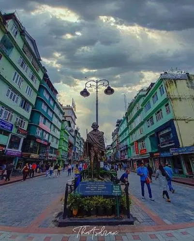
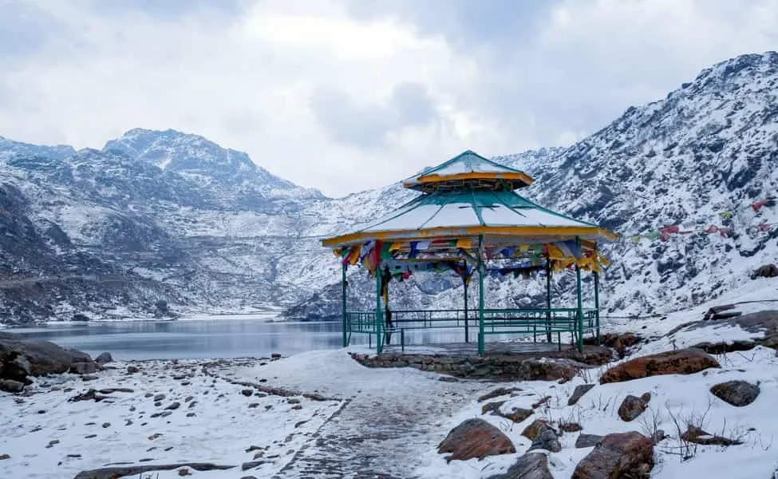
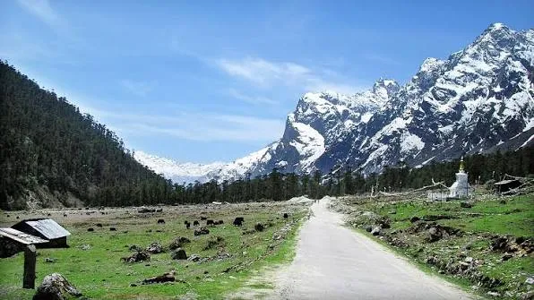
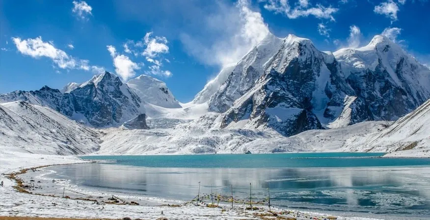

Sikkim · −21%
SIKKIM 6N-7D (Gangtok-Lachung-Lachen)
Lachen – A Hidden Gem of Sikkim
Overview
Enjoy a memorable 6 Nights & 7 Days Sikkim tour covering Gangtok, Lachung and Lachen. Begin with Gangtok sightseeing and explore attractions like Tashi View Point, Banjhakri Falls, Enchey Monastery and MG Marg. Continue to Lachung for the spectacular Yumthang Valley and Zero Point, surrounded by snow-capped mountains and beautiful valleys. Proceed to Lachen and visit the breathtaking Gurudongmar Lake, enjoying the pristine Himalayan scenery before returning to NJP/Bagdogra for departure.
Journey highlights
- Gangtok Sightseeing
- Tashi View Point
- Banjhakri Falls
- Enchey Monastery
- MG Marg Leisure & Shopping
- Scenic Mountain Drive
- Yumthang Valley Excursion
- Zero Point Visit
- Snow & Himalayan Views Photography Gurudongmar Lake Excursion
- High-Altitude Mountain
- Views Scenic Valley Drive
- Photography & Nature Experience
- Departure Scenic Drive to NJP/Bagdogra
Day by day
The itinerary
-
Day 1
ARRIVAL AT NJP/IXB – TRANSFER TO GANGTOK
Arrive at NJP Railway Station or Bagdogra Airport (IXB) and meet our representative. Proceed towards Gangtok through the scenic Himalayan foothills, enjoying beautiful mountain landscapes and Teesta River views. On arrival, check in to your hotel and relax. In the evening, explore MG Marg and enjoy the pleasant atmosphere of Gangtok.
NJP/IXB PickupTeesta River ViewsScenic Himalayan DriveGangtok ArrivalHotel Check-inMG MargEvening Leisure
-
Day 2
GANGTOK – TSOMGO LAKE, BABA MANDIR & NATHULA PASS EXCURSION
After breakfast, proceed for an exciting excursion to Tsomgo Lake, a spectacular glacial lake surrounded by snow-covered mountains. Continue to Baba Harbhajan Singh Mandir, known for its unique history and spiritual significance. If permitted and weather conditions are favourable, proceed to Nathula Pass, the historic Indo-China border point. Return to Gangtok in the evening.
Tsomgo LakeBaba MandirNathula Pass*Snow-Capped MountainsHigh-Altitude LandscapesScenic Photography
-
Day 3
GANGTOK – LACHUNG TRANSFER VIA SCENIC NORTH SIKKIM ROUTE
After breakfast, check out and begin your scenic journey towards Lachung. Travel through beautiful mountain valleys, dense forests and along the Teesta River. En route, enjoy scenic attractions such as Seven Sisters Waterfalls and Singhik Viewpoint, subject to local conditions. On arrival at Lachung, check in to your hotel and relax amidst the peaceful Himalayan surroundings.
Gangtok–Lachung Scenic DriveTeesta RiverSeven Sisters WaterfallsSinghik ViewpointMountain ValleysForest LandscapesLachung Village
-
Day 4
LACHUNG – YUMTHANG VALLEY & ZERO POINT EXCURSION – LACHUNG
Start early for an unforgettable excursion to Yumthang Valley, famously known as the Valley of Flowers. Enjoy its spectacular Himalayan scenery, alpine landscapes and seasonal flowers. Continue towards Zero Point, a high-altitude destination known for its snow-covered surroundings and breathtaking mountain views. After enjoying the natural beauty, return to Lachung for an overnight stay.
Yumthang ValleyValley of FlowersZero Point*Snow ExperienceHimalayan ViewsAlpine LandscapesPhotography
-
Day 5
LACHUNG – LACHEN TRANSFER THROUGH NORTH SIKKIM
After breakfast, check out from Lachung and proceed towards Lachen. Enjoy a scenic drive through dense Himalayan forests, mountain streams, waterfalls and beautiful valleys. On arrival at Lachen, check in to your hotel and relax. Spend the evening enjoying the peaceful mountain surroundings.
Lachung–Lachen Scenic DriveHimalayan ForestsWaterfallsMountain StreamsScenic ValleysLachen VillageNature Photography
-
Day 6
LACHEN – GURUDONGMAR LAKE EXCURSION – LACHEN
Start early for an exciting excursion to Gurudongmar Lake, one of India's highest lakes and one of North Sikkim's most spectacular attractions. Enjoy breathtaking views of snow-covered Himalayan peaks, high-altitude landscapes and crystal-clear surroundings. After spending time at the lake, return to Lachen and relax at the hotel.
Gurudongmar LakeHigh-Altitude Himalayan LandscapeSnow-Capped PeaksScenic Mountain DrivePhotographyNature Experience
Included
- Reserved vehicle for Transfer & Sightseeing.
- All sightseeing as per the Tour Itinerary.
- Nights stay in Hotel
- Accommodation in Hotel What's Excluded
- Any personal expenses.
- All Taxes and Permits etc. for Darjeeling Sikkim & Bhutan.
- Any other not mentioned in includes Para
Not included
- Any personal expenses.
- All Taxes and Permits etc. for Darjeeling Sikkim & Bhutan.
- Any other not mentioned in includes Para
Gallery
Scenes from the route





Reserve this journey